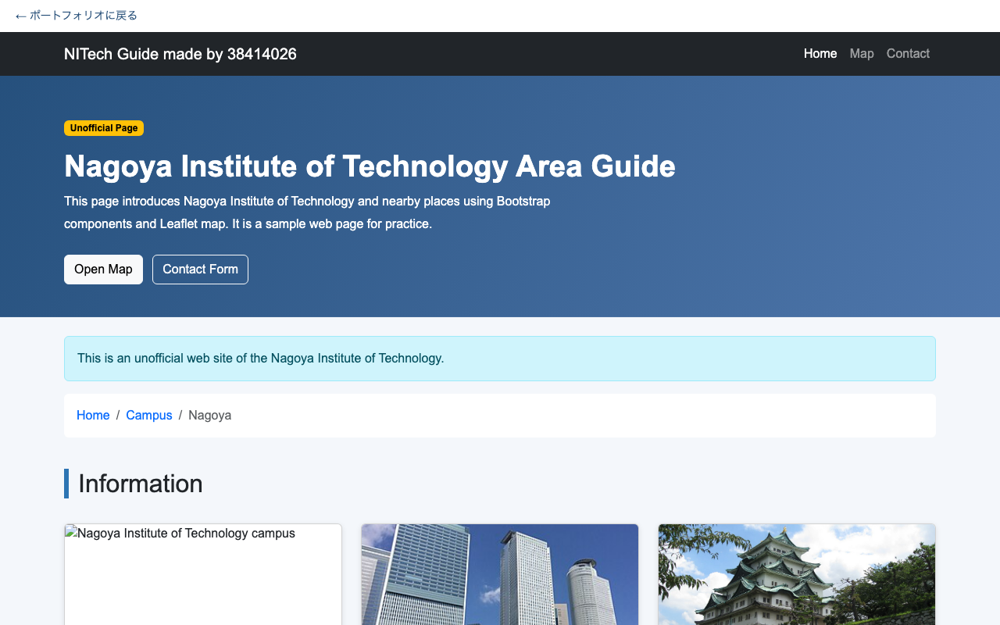

 Webサイト NITech Area Guide ↗ 課題作成物：名古屋工業大学と周辺スポットの案内ページ。 HTML / CSS / Bootstrap / Leaflet サイトを見る →
MWS2026ハッカソン＆動画制作 Back to the Feature ↗ 過去から起こり得るセキュリティインシデントを防げ TypeScript/JavaScript/CSS/ リポジトリを見る →